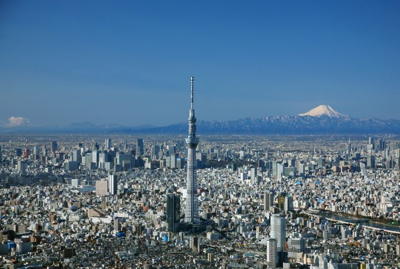

Introducción
Tokio, la capital de Japón, es una ciudad moderna y vibrante que combina la tradición con la tecnología de vanguardia. Con su bullicioso ambiente, deliciosas opciones gastronómicas, moda única y una rica cultura, Tokio ofrece una experiencia inolvidable a sus visitantes.
Atracciones
Entre las muchas atracciones que ofrece Tokio se encuentran el Templo Senso-ji, el Barrio de Harajuku, el cruce de Shibuya, el Palacio Imperial y el parque temático Disneyland Tokyo. Cada barrio de la ciudad tiene su propio encanto y personalidad.
Imágenes

Vista panorámica de la ciudad de Tokio